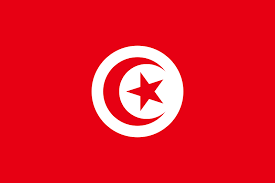

Tunisia, officially the Republic of Tunisia, is the northernmost country in Africa. It is a part of the Maghreb region of North Africa, bordered by Algeria to the west and southwest, Libya to the southeast, and the Mediterranean Sea to the north and east. It features the archaeological sites of Carthage dating back to the 9th century BC, as well as the Great Mosque of Kairouan. Known for its ancient architecture, souks, and blue coasts, it covers 163,610 km2 (63,170 sq mi), and has a population of 12.1 million. It contains the eastern end of the Atlas Mountains and the northern reaches of the Sahara desert; much of its remaining territory is arable land. Its 1,300 km (810 mi) of coastline includes the African conjunction of the western and eastern parts of the Mediterranean Basin. Tunisia is home to Africa's northernmost point, Cape Angela. Located on the northeastern coast, Tunis is the capital and largest city in the country. Tunisia is named after Tunis.
